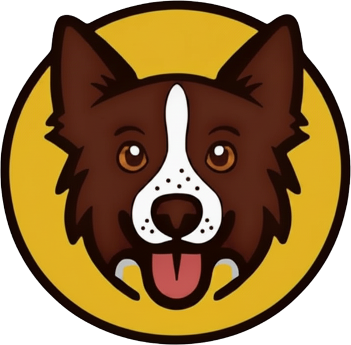

Medium
For medium-to-large dogs who take fetch very seriously. Park, beach or pool.
- Floats
- Natural rubber
- Bio-based, not petroleum
- No microplastics

Benji's Balls See the ballsDesigned in Sydney · Tested by Benji
The fetch ball your dog actually deserves. Natural rubber, proper bounce, tested daily by a very opinionated border collie.
The pack
For medium-to-large dogs who take fetch very seriously. Park, beach or pool.
Same ball, smaller mouths. For little dogs with big fetch energy.
For dogs who want the chase to last longer. Built for grass, sand and the backyard.
The science bit
Dogs don't see colour the way we do. Their eyes pick up blues and yellows clearly, but reds and greens look dull and brownish. That's why a red ball can vanish in green grass.
And a 2025 study in the journal Animal Cognition found dogs went for yellow first, even ahead of food. So we picked the two colours dogs see best.
"I have never, in my five years, met a ball with this much bounce. 10/10. Would fetch again."
Benji, Chief Quality Officer
Chocolate-and-white border collie. Five years old. Opinionated. Fronts the brand, tests every ball, owns the couch.